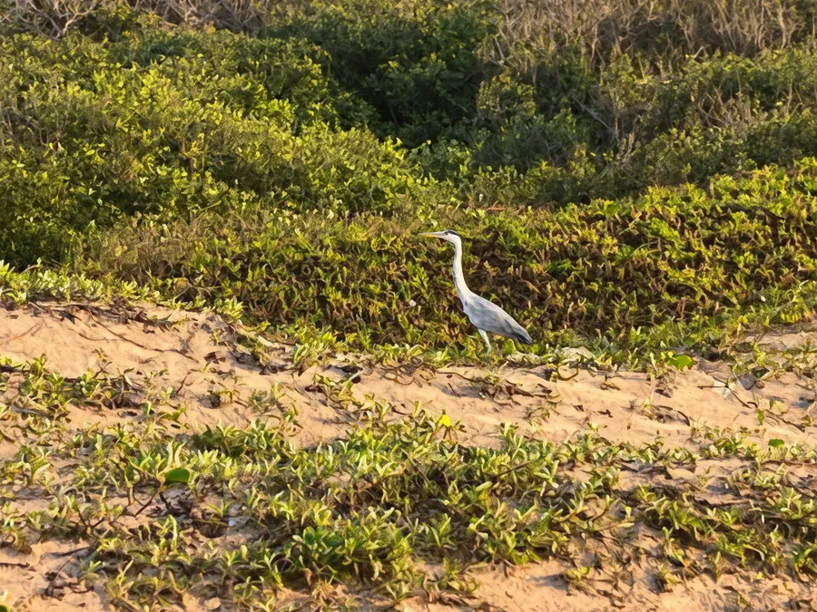

Want a garden outing rather than another beach day? Durban North's Japanese Gardens have ponds, bridges and paths worth exploring. Here's how to plan a visit from the Bluff.

Know which garden to look for
The Japanese Gardens are in Durban North, around Prospect Hall Road and Tinsley Road. Listings also call the park Sakura Park. The location is separate from Durban Botanic Gardens in Berea, which has its own grounds and visitor information.
Save the garden's Durban North map pin before leaving 4Shore. Some listings give 6 Prospect Hall Road while others point to Tinsley Road, so check the entrance shown on your live map rather than relying on one street number.
What makes the gardens worth visiting?
The park has Japanese-style bridges, ponds, paved paths, bamboo and lawns. It was first opened in 1963. The layout makes it more than a patch of grass: the water, plants and small crossings give you something different to notice as you walk.
We think a visit works best when you take time to look at the design. Follow the path between the bridges, stop near the ponds and look for details you missed on the first walk. You do not need a guided tour to enjoy it.
Check entry and hours before you leave
Current visitor listings describe admission as free and the gardens as a public municipal park. That makes them an option for guests who want an outing without a paid attraction ticket.
Opening times vary across websites. Some give set daily hours; others advise daytime visits without a firm timetable. We cannot verify a current official gate schedule, so phone the local parks contact or check the park's latest notice before making the trip. Do not plan to arrive near closing time.
Take a picnic only if it adds to the visit
The gardens have lawns and places where visitors often sit. If you hope to eat there, bring water and a light meal, then check any current rules about food, braais, events and waste at the entrance.
A picnic is not essential. For a shorter outing, a walk and a few photographs may be enough. We would avoid carrying a large setup until you know what spaces are available on that day.
Make it a family visit without a rigid route
Children may enjoy spotting bridges, pond life and different plants. Set one small challenge: find three shapes in the bridges and paths or look for two types of water plants. Keep children close to the water and follow the park's signs.
This is an outdoor park, not a supervised play session. Adults still need to watch children near ponds. If someone in your group needs an accessible path, ask about the current surface conditions before you travel.
Plan around your stay on the Bluff
From 4Shore Guesthouse at 28 Foreshore Drive, use a live route to the Durban North gardens. Check current traffic and parking arrangements. Avoid guessing journey times from older travel posts.
Our Durban transport guide covers the choice between driving and a booked ride. If you want to compare another garden outing, read our Durban Botanic Gardens guide. The two parks serve different types of visit.
Choose the gardens for a change of scene
The Bluff offers coastal views and beach walks. A trip to a garden with ponds and bridges gives you a different setting without making it a full sightseeing circuit.
Our preference is to give the garden its own purpose. Enjoy the plants and landscape, take a break, then return to your base. Trying to squeeze several distant attractions into the same afternoon can leave less time to enjoy any of them.
FAQ: Durban North Japanese Gardens
Is entry to Durban North Japanese Gardens free?
Current garden and tourism listings describe public entry as free. Check the latest notice before visiting.
Where are the Japanese Gardens in Durban?
They are in Durban North near Prospect Hall Road and Tinsley Road. Check the entrance pin on your map.
What can I see at the Japanese Gardens?
Visitors can see ponds, Japanese-style bridges, bamboo, planted areas and lawns. Features may vary with upkeep.
Can I visit the gardens at sunset?
Do not assume late opening. Published hours differ between listings, so confirm the current gate hours and visit well before closing.
Ask about a stay at 4Shore
Winston is the owner and host of 4Shore Guesthouse and the person guests can contact directly about rooms, rates, availability and practical questions. 4Shore is at 28 Foreshore Drive, Ocean View, Bluff, Durban, KwaZulu-Natal, 4052. Call +27 83 254 4825 or email 4shoredurban@gmail.com.